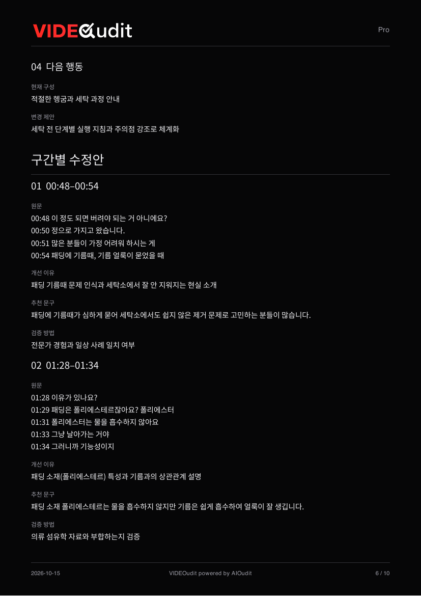
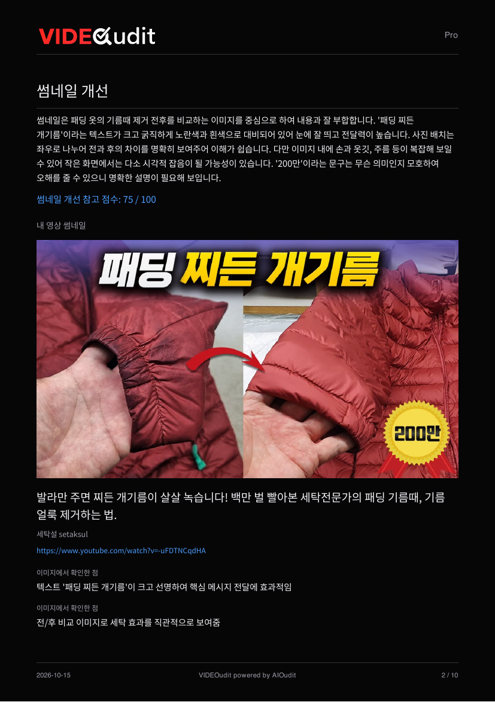
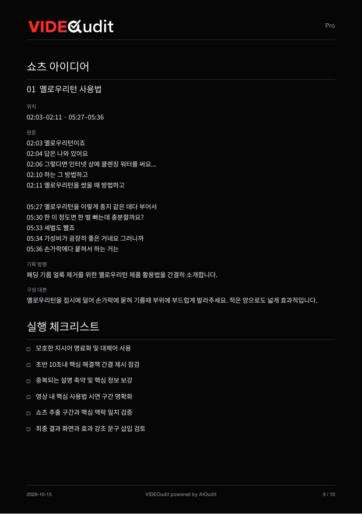

VIDEO CONTENT · FROM REVIEW TO EDIT
VIDEOudit
진단에서 편집까지.
다음 수정이 보이게.
영상 주소와 확보한 대본을 바탕으로 내용을 점검합니다. 썸네일 진단, 시간대별 수정안, 쇼츠 아이디어를 다음 제작에 활용하세요.
01 / 실제 진단 화면
영상 주소와 자막으로
진단을 준비합니다.
진단할 영상을 정하고, 어떤 자료를 바탕으로 평가하는지 확인하는 데서 시작합니다.
- 01
유튜브 영상 주소 입력
영상 URL을 입력하면 제목과 채널을 확인합니다.
- 02
동의 후 공개 자막 가져오기
선택한 영상의 공개 자막 수집에 동의하고 가져옵니다. 이 단계에서는 진단 크레딧을 사용하지 않습니다.
- 03
자료를 확인하고 AI 진단 실행
자막 수집과 AI 진단은 별도 단계입니다. 확보된 자료로 진단한 뒤 보고서에서 수정할 부분을 확인합니다.

02—03 / 결과 확인에서 실행까지
결과를 보고,
바로 다음 컷을 준비하세요.
내용 점검부터 썸네일, 대본 수정과 쇼츠 기획까지. 실제 Pro 샘플 보고서를 항목별로 살펴보세요.
EDIT WITH CONTEXT
몇 분 몇 초를,
어떻게 바꿀지.
원문의 시간대를 짚어주고, 개선 이유와 추천 문구를 함께 제공합니다.
- 타임스탬프로 위치 찾기
- 샘플의 00:48–00:54, 01:28–01:34처럼 수정할 구간을 원문 시간과 연결합니다.
- 원문과 추천 문구 읽기
- 여러 줄로 나뉜 대사의 핵심을 어떻게 더 명확한 문장으로 정리할지 확인합니다.
- 추천안 검증하기
- 수정 문구가 전문가 경험이나 참고 자료에 맞는지 검증 방법도 함께 살펴봅니다.
제공된 대본을 바탕으로 한 편집 제안입니다. 원본 영상·음성의 직접 평가나 실제 시청 성과 측정과는 구분됩니다.
PDF 6쪽에서 보기
제공된 샘플 보고서 원본 페이지 · 확대하면 세부 내용을 읽을 수 있습니다.
MAKE THE FIRST FRAME CLEAR
썸네일의 강점과
복잡한 부분을 함께.
실제 썸네일 이미지와 진단 내용을 나란히 보며, 첫인상에서 유지할 것과 바꿀 것을 찾습니다.
- 실제 이미지 확인
- 보고서에 대상 영상의 썸네일, 제목, 채널과 링크가 함께 표시됩니다.
- 전달력 점검
- 전후 비교, 텍스트 크기와 색 대비처럼 핵심 메시지가 보이는 요소를 확인합니다.
- 수정 방향 구체화
- 샘플은 복잡한 배경을 단순화하고, 의미가 모호한 문구를 명확히 하도록 제안합니다. 자세한 수정 제안은 PDF 3쪽으로 이어집니다.
표시된 점수는 이 샘플의 개선 참고치입니다. 클릭률이나 조회수 예측값이 아닙니다.
PDF 2쪽에서 보기
제공된 샘플 보고서 원본 페이지 · 확대하면 세부 내용을 읽을 수 있습니다.
SEE THE WHOLE PICTURE
내용의 강점과
검토한 범위를 한눈에.
내용 개선 종합, 시청 흐름, 검색 이해도와 함께 영상의 핵심을 요약합니다.
- 세 영역으로 나눠 보기
- 점수와 요약을 함께 읽으며 내용을 전달하는 흐름과 검색 이해도를 점검합니다.
- 확보 자료의 범위 확인
- 샘플에는 검토 범위가 9/60(15%)로 표시됩니다. 점수는 이 자료 범위 안에서 해석합니다.
- 유지할 강점 찾기
- 잘 전달된 핵심 내용은 유지하고, 뒤이어 나오는 우선 수정 사항과 비교합니다.
시청 흐름 점수는 실제 시청 유지율이 아니며, 점수는 실제 시청 성과나 노출을 보장하지 않습니다.
PDF 1쪽에서 보기TURN ONE VIDEO INTO MORE
긴 영상에서,
짧은 콘텐츠의 실마리.
활용할 원문 구간과 기획 방향, 구성 대본을 모아 다음 콘텐츠를 준비합니다.
- 활용할 구간 찾기
- 쇼츠로 발전시킬 구간을 타임스탬프와 원문으로 확인합니다.
- 기획 방향과 대본 검토
- 어떤 메시지에 집중할지 정하고, 제안된 구성 대본을 제작 방향에 맞게 다듬습니다.
- 실행 체크리스트 확인
- 초반 핵심 제시, 모호한 지시어 정리, 중복 설명 축약 등 마무리 작업을 점검합니다.
쇼츠 제작을 위한 기획 제안이며, 영상을 자동으로 편집하거나 게시하는 기능을 의미하지 않습니다.
PDF 9쪽에서 보기
제공된 샘플 보고서 원본 페이지 · 확대하면 세부 내용을 읽을 수 있습니다.
보고서 전체를 읽어보세요.
VIDEOudit Pro 샘플 · 10쪽 · PDF 1.7 MB
화면과 진단 내용은 제공된 운영 화면 및 Pro 샘플 보고서의 예시입니다. 결과는 진단 대상과 확보된 자료에 따라 달라집니다.
Your next step